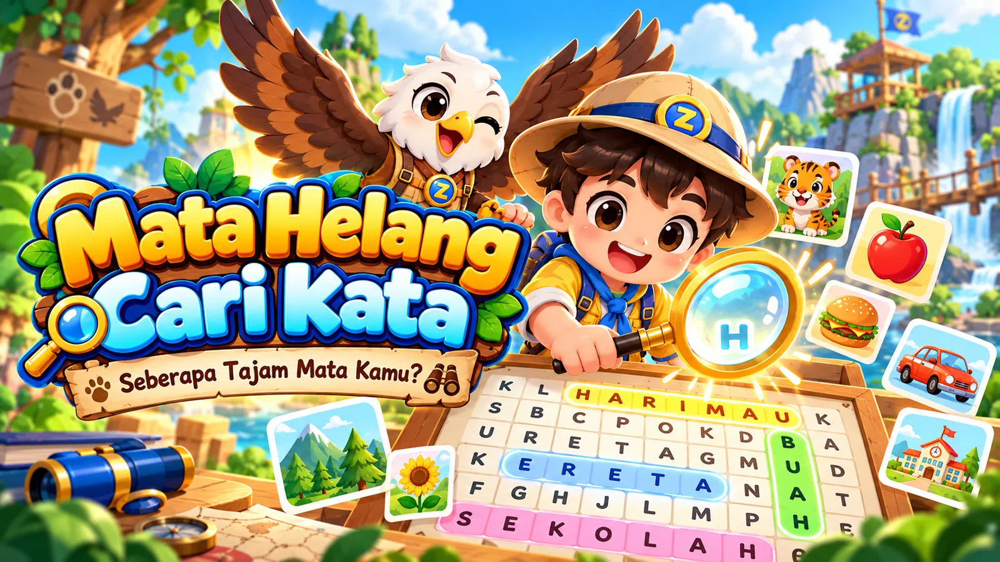
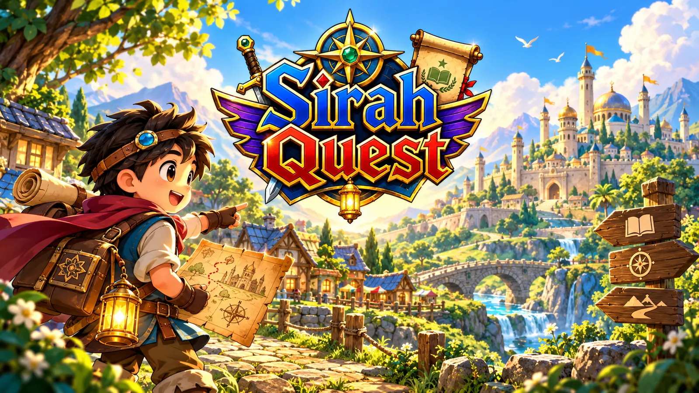
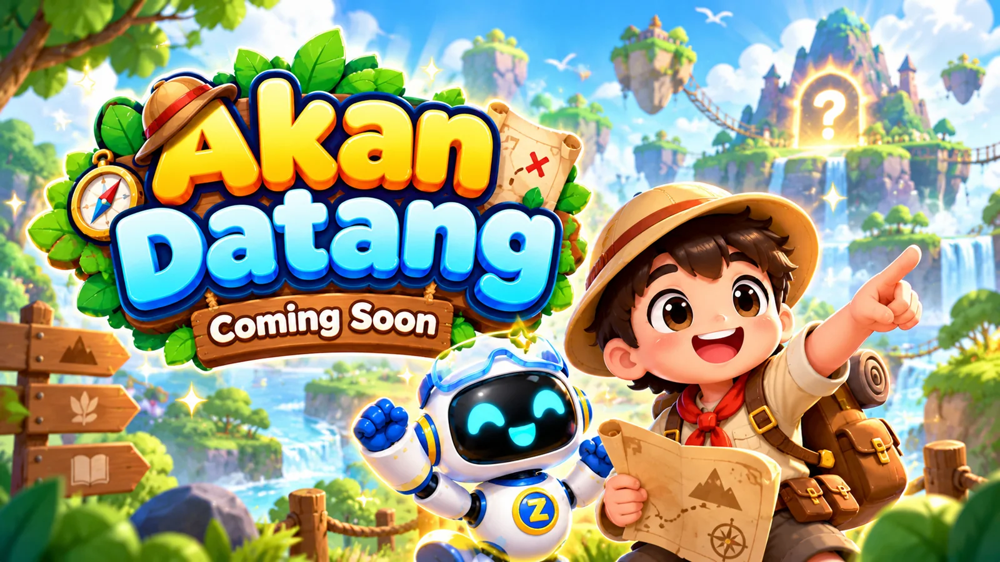
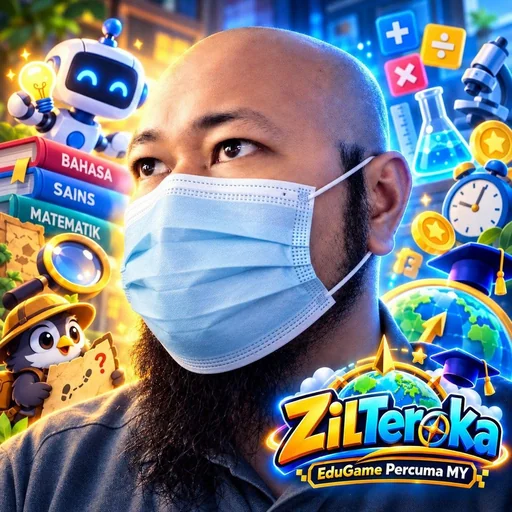

Percuma Sepenuhnya
Semua permainan boleh dimainkan tanpa sebarang bayaran.
Dunia pembelajaran interaktif
Permainan pendidikan interaktif percuma untuk kanak-kanak.
Lihat Semua GamePercuma SepenuhnyaTanpa sebarang bayaran
Tiada PendaftaranTerus buka dan main
Tiada Data PeribadiTiada data peribadi dikumpulkan oleh kami
Pilih pengembaraan
Setiap game membawa cabaran tersendiri—pilih satu dan mulakan penerokaan.
Main dengan yakin
Semua permainan boleh dimainkan tanpa sebarang bayaran.
Terus main di web. Tiada akaun diperlukan.
Kami tidak meminta atau menyimpan data peribadi kanak-kanak.
Rakan pembelajaran
Pilih game mengikut fokus pembelajaran dan gunakan sebagai aktiviti tambahan di rumah atau dalam kelas.
Kemahiran utama diterangkan dengan jelas.
Pilih game mengikut kemahiran yang ingin dilatih.
Cadangan mudah untuk aktiviti di rumah atau kelas.
Main pada peranti yang paling mudah dicapai.
Cadangan aktiviti antara 10 hingga 25 minit.
Penerokaan diteruskan
Lebih banyak dunia ZilTeroka sedang dibangunkan.

Cari perkataan tersembunyi sambil mengasah kosa kata, fokus dan pemerhatian.

Educational fantasy RPG untuk meneroka, mencari klu Sirah dan menyelesaikan misi melalui ilmu.

Satu lagi dunia pembelajaran ZilTeroka sedang dalam perancangan.
Soalan lazim
Ya. Semua game ZilTeroka boleh dimainkan tanpa bayaran.
Tiada akaun diperlukan—buka game dan terus bermain.
Tiada data peribadi dikumpulkan oleh kami.
Saluran rasmi
Ada cadangan, jumpa masalah atau mahu berkongsi maklum balas? Hubungi ZilTeroka melalui saluran rasmi di bawah.
EduGame Percuma MY

Pembangun ZilTeroka
WhatsApp: @zilelsaif — maklumat hubungan sahaja